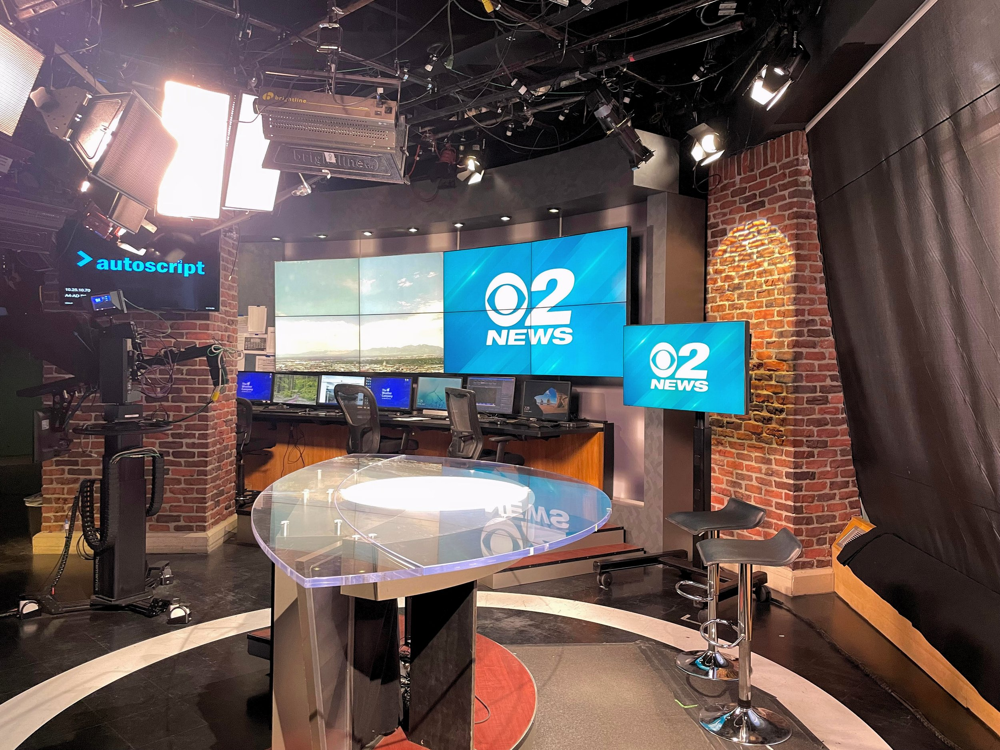

I helped build this tech company's branding from the ground up, creating marketing materials, trade show designs, and internal communications—including launching a monthly newsletter that reaches our team across 12 countries.
View More


At Utah's most-watched news station, I helped grow our digital presence by developing social media content strategies, producing impactful stories under tight deadlines, and optimizing engagement across platforms.
View MoreI earned my master's degree in Journalism and Mass Communication from Arizona State University, gaining hands-on experience in innovative news production, multimedia storytelling, and various styles of advanced writing.
View More